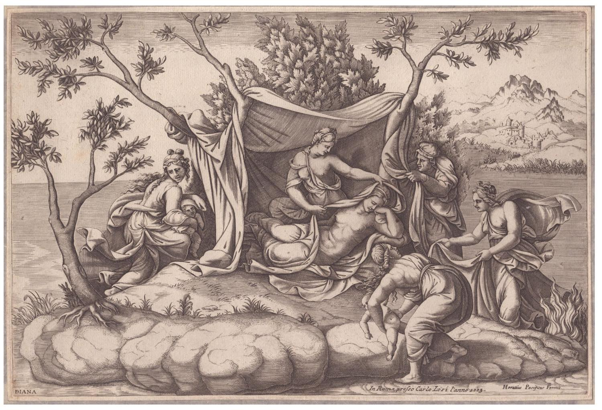
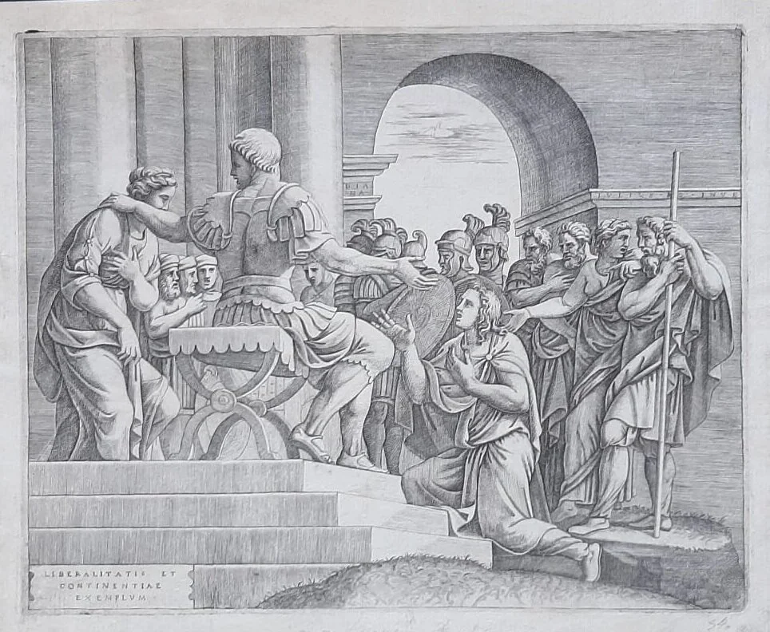

Incisione attribuita a Diana Mantovana, esemplare della sua fine qualità di segno e della sua attenzione alla traduzione grafica del modello scultoreo.
XVI secolo
Diana Mantovana, nota anche come Diana Scultori o Diana Mantuana, nacque a Mantova nel 1547 e morì a Roma il 5 aprile 1612. Si formò nella bottega del padre Giovan Battista Scultori, incisore attivo alla corte dei Gonzaga, e apprese il linguaggio dell’incisione anche attraverso le invenzioni di Giulio Romano. Dopo il matrimonio con l’architetto Francesco da Volterra (Capriani), nel 1575 si trasferì a Roma, dove visse e lavorò presso via della Scrofa. È considerata una delle prime donne conosciute nella storia della stampa. Tradusse in incisione opere di maestri come Raffaello, Federico Zuccari e Raffaellino da Reggio. Nel 1575 ottenne da papa Gregorio XIII il privilegio di firmare le proprie lastre con il proprio nome, Diana Mantuana, e di commercializzarle in esclusiva per dieci anni: un riconoscimento straordinario e quasi unico per una donna del suo tempo. Vasari la citò nell’edizione del 1568 delle Vite.
Questa pagina è predisposta per raccogliere la videopresentazione realizzata dagli studenti, eventuali immagini aggiuntive e link di approfondimento.
Una piccola selezione di immagini utili per conoscere il suo lavoro incisorio.

